변경 이력최신 문서 v1.2.001
- 패키저 v1.2.1 반영 — Ctrl+A 전체 선택 안내 추가
- 문서 변환 화면 스크린샷 교체
- 저장하지 않은 편집이 있을 때 종료 확인 안내 추가
- 최초 배포
소개
ebook ebook 패키저는 PDF를 불러와 인터랙티브 교과서(ebook)를 만드는 저작 도구입니다. 페이지 위에 버튼을 배치해 다른 페이지·외부 URL로 연결하고, 목차·출판 정보·검색 내용을 편집한 뒤 ZIP 파일로 저장합니다.
- 입력: PDF 파일 (교과서 원본)
- 출력: 교과서 ZIP — 페이지 HTML·이미지·버튼·목차가 포함된 패키지
- 작업 저장: 저장한 ZIP을 다시 불러와 이어서 편집할 수 있습니다
사용 전 참고 사항
- 실행 환경 — Windows 데스크톱 앱입니다. 별도 설치 과정 없이 배포된 실행 파일을 실행하면 됩니다.
- 결과물 — 패키징 결과는
.zip파일 1개입니다. 내용은 수정하지 말고 그대로 전달하거나 아래 위치에 배치하세요. -
뷰어 배치 — ZIP의 압축을 풀어 뷰어의
platform/onbook/ebook/(책 폴더)/바로 아래에 내용물(book.xml·toc.xml·web/)이 오도록 배치합니다. 책 폴더는 책(권) 단위입니다 —unit01: 책 1,unit02: 책 2(수학 익힘책처럼 2권으로 구성되는 경우).platform/onbook/ebook/ ├─ unit01/ ← 책 1 — ZIP 내용물을 이 아래에 배치 │ ├─ book.xml │ ├─ toc.xml │ └─ web/ └─ unit02/ ← 책 2 (2권 구성일 때만)
- 확인 방법 — 배치 후 OnBook 뷰어를 실행해 실제 표시를 확인합니다.
작업 흐름
전체 작업은 다음 순서로 진행합니다. 자세한 방법은 각 절을 참고하세요.
화면 구성
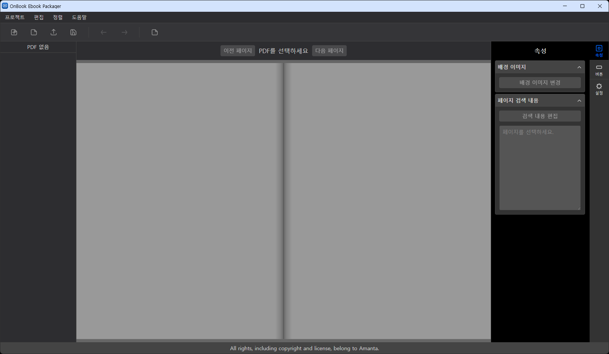
| 영역 | 설명 |
|---|---|
| 메뉴바 (상단) | 프로젝트 · 편집 · 정렬 · 도움말 메뉴. 주요 기능은 단축키로도 실행할 수 있습니다. |
| 퀵 툴바 (메뉴바 아래) | 새 프로젝트, PDF 페이지 추가, ZIP 불러오기/저장, 실행 취소/다시 실행, 빈 페이지 추가 등 자주 쓰는 기능을 아이콘으로 바로 실행합니다. |
| 페이지 목록 (왼쪽) | 페이지 썸네일 목록. PDF를 불러오기 전에는 PDF 없음으로 표시됩니다. 자세한 조작법은 페이지 목록 절을 참고하세요. |
| 편집 영역 (중앙) | 선택한 페이지를 양면(펼침면)으로 표시합니다. 버튼 배치·선택·이동이 이곳에서 이루어지며, 상단의 이전 페이지/다음 페이지 버튼으로 페이지를 이동합니다. |
| 패널 (오른쪽) |
세로 탭 3개로 구성됩니다. · 속성 — 선택한 페이지의 배경 이미지 변경, 페이지 검색 내용 확인·편집 · 버튼 — 버튼 타입·디자인·링크·툴팁 편집 · 설정 — 프로젝트 설정(시작 페이지), 목차 설정, 출판 정보 편집 |
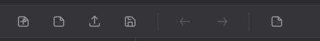
각 아이콘의 자세한 동작은 메뉴·단축키에서 같은 이름의 메뉴 항목을 참고하세요.
PDF 페이지 추가 (삽입·교체)
프로젝트 → PDF 페이지 추가(Alt+D)에서 PDF를 열고, 원하는 페이지를
선택해 현재 프로젝트에 삽입하거나 기존 페이지를 교체합니다.
1) PDF 파일 선택
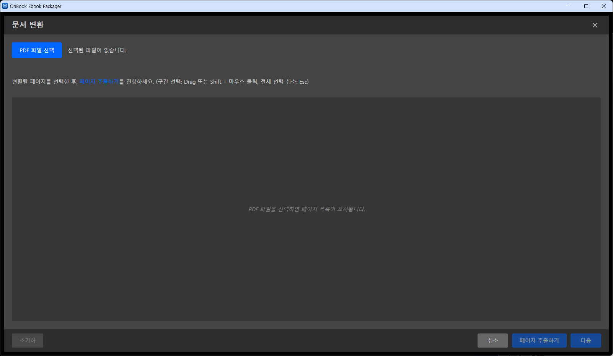
PDF 파일 선택 버튼으로 변환할 PDF를 지정합니다.
2) 페이지 선택
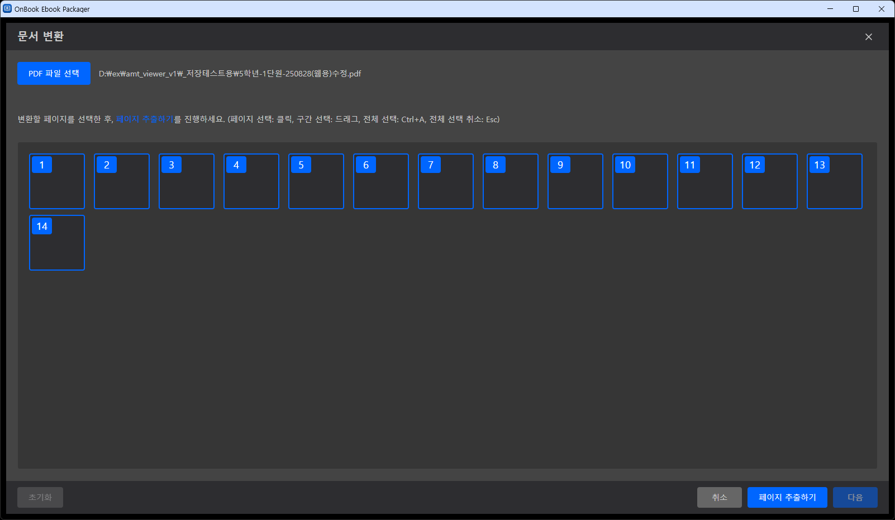
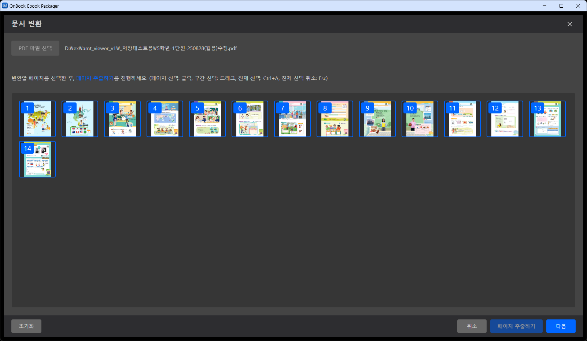
- 클릭 — 페이지 1장의 선택 상태를 토글합니다 (선택 ↔ 해제).
- 드래그 — 드래그 영역에 걸치는 페이지들을 한 번에 여러 장 선택할 때 사용합니다. 영역 안의 각 페이지는 선택 상태가 토글되므로, 이미 선택된 페이지가 영역에 걸리면 오히려 선택이 해제됩니다.
- Ctrl+A — 전체 페이지를 선택합니다.
- Esc — 전체 선택을 취소합니다.
페이지를 고른 뒤 페이지 추출하기 → 다음을 누릅니다.
3) 삽입 위치·옵션 지정
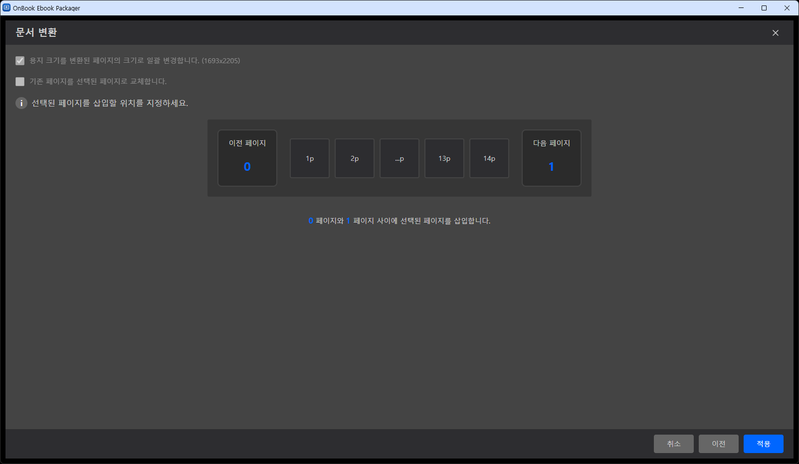
| 옵션 | 설명 |
|---|---|
| 용지 크기를 변환된 페이지의 크기로 일괄 변경 | 기존 페이지들의 용지 크기를 새로 추출한 페이지 크기에 맞춰 통일합니다. |
| 기존 페이지를 선택된 페이지로 교체 | 체크하면 삽입 대신 교체 모드로 동작하며, 아래와 같은 교체 전용 옵션이 나타납니다. |
| 삽입 위치 (페이지 버튼) | 이전 페이지·다음 페이지 사이 원하는 지점을 클릭해 정확한 삽입 위치를 지정합니다. (교체 모드에서는 아래 순차 교체 옵션으로 대체됩니다.) |
3-1) 교체 모드를 선택했다면
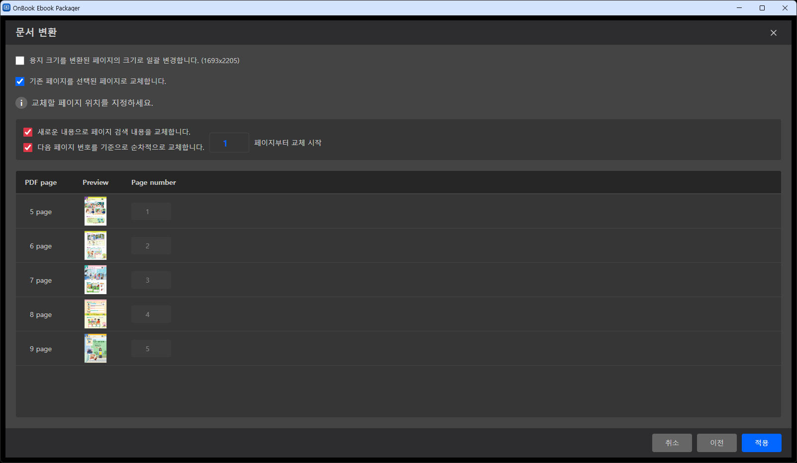
| 옵션 | 설명 |
|---|---|
| 새로운 내용으로 페이지 검색 내용을 교체합니다 | 체크하면 새로 추출한 페이지의 텍스트로 검색 내용을 교체합니다. 체크를 해제하면 기존 페이지의 검색 내용을 유지합니다. |
| 다음 페이지 번호를 기준으로 순차적으로 교체합니다 (순차 모드) | 지정한 시작 페이지 번호부터 선택한 PDF 페이지를 순서대로 매칭해 교체합니다. 체크를 해제하면 PDF page → Page number 표에서 페이지마다 교체 대상을 직접 지정할 수 있습니다 (비순차 교체). |
| PDF page → Page number 표 | 선택한 각 PDF 페이지가 프로젝트의 몇 번째 페이지를 교체하는지 보여줍니다. 순차 모드에서는 자동으로 채워지며, 해제 시 직접 편집할 수 있습니다. |
4) 적용 완료
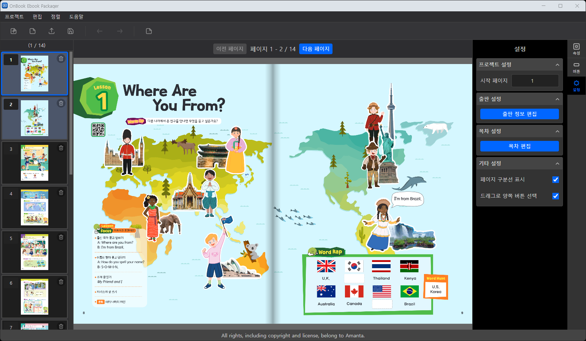
적용 버튼을 누르면 문서 변환 모달이 닫히고, 왼쪽 페이지 목록과 편집 영역에 추가·교체된 페이지가 바로 반영됩니다.
페이지 목록
왼쪽 페이지 목록에서 페이지 이동·순서 변경·삭제를 다룹니다.
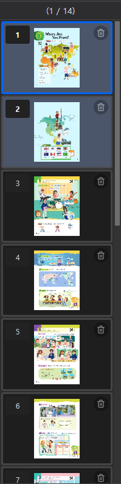
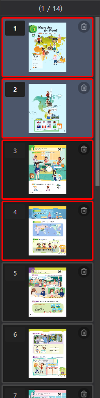
| 동작 | 설명 |
|---|---|
| 클릭 | 해당 페이지로 이동합니다. |
| 페이지 번호 칸 입력 | 썸네일 위의 번호는 입력 필드입니다. 숫자를 바꾸고 Enter를 누르면 그 위치로 페이지 순서가 바뀝니다. |
| 드래그 | 썸네일을 위아래로 끌어 순서를 바꿉니다. 드롭 위치는 파란 구분선으로 표시됩니다. |
| 삭제 버튼 | 확인 후 해당 페이지 1장을 삭제합니다. |
| Ctrl+클릭 | 클릭한 페이지를 다중 선택에 추가/제거(토글)합니다. |
| Shift+클릭 | 마지막으로 선택한 페이지부터 클릭한 페이지까지 범위를 선택합니다. |
| Delete (다중 선택 시) | 선택된 페이지를 확인 후 한꺼번에 삭제합니다. |
| Esc / 목록 바깥 클릭 | 다중 선택을 해제합니다. |
페이지 속성 편집
오른쪽 패널의 속성 탭에서 선택한 페이지의 배경 이미지와 검색 내용을 편집합니다.
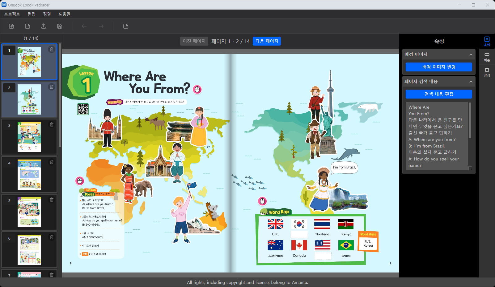
배경 이미지
배경 이미지 변경으로 선택한 페이지의 배경 이미지를 다른 이미지로 교체할 수 있습니다.
페이지 검색 내용
PDF를 불러올 때 페이지별 텍스트가 자동 추출되어 뷰어의 검색에 사용됩니다. 속성
탭에는 추출된 텍스트가 미리보기로 표시되며, 검색 내용 편집을 누르면 편집 화면이 열립니다.
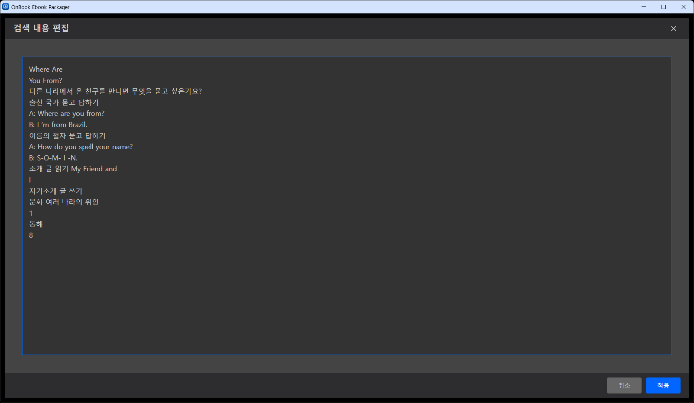
추출 결과가 부정확하거나 검색에 노출하고 싶지 않은 내용이 있으면 이 화면에서 페이지별로 수정합니다.
설정 탭
오른쪽 패널의 설정 탭에서 프로젝트 설정·출판 설정·목차 설정·기타 설정을 한 곳에서 관리합니다.
프로젝트 설정
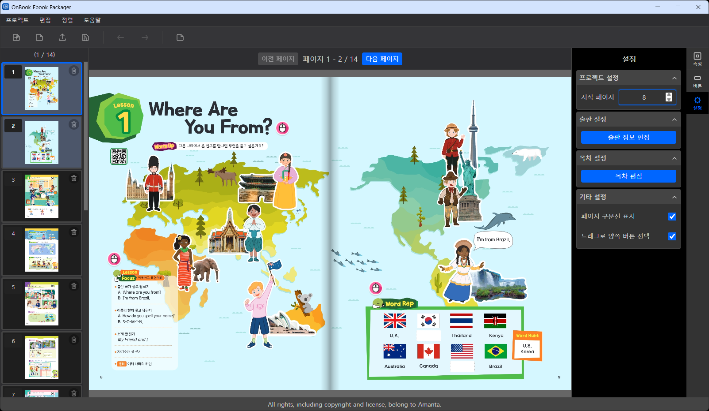
시작 페이지는 첫 페이지에 부여할 실제 페이지 번호입니다. 이 값을 바꾸면
이후 모든 페이지 번호·목차 페이지 번호가 함께 밀려서 계산됩니다(book.xml의
spine@startPageNumber로 저장).
출판 설정
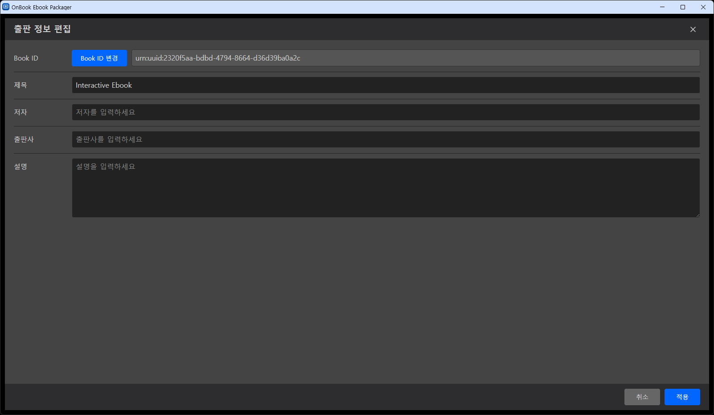
출판 정보 편집을 누르면 열리는 모달| 항목 | 설명 |
|---|---|
| Book ID | 교과서 고유 ID (UUID). 새 프로젝트 생성 시 자동 발급되며, Book ID 변경으로 다시 발급할 수 있습니다. |
| 제목 | 교과서 제목. ZIP 저장 시 기본 파일명으로 사용됩니다. |
| 저자 / 출판사 / 설명 | 교과서 메타 정보입니다. |
목차 설정
목차 편집을 누르면 목차 항목을 추가·수정·삭제하는 모달이 열립니다.
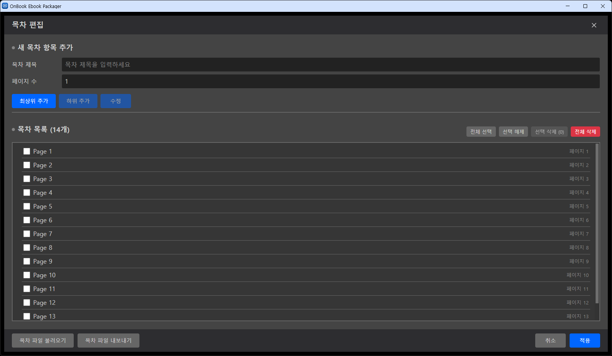
Page 1, Page 2, …가 자동 생성되어 있습니다.| 항목 | 설명 |
|---|---|
| 목차 제목 / 페이지 수 | 새로 추가할 목차 항목의 제목과, 그 항목이 몇 페이지에 걸쳐 있는지 입력합니다. |
| 최상위 추가 / 하위 추가 | 입력한 내용을 최상위 항목 또는 선택한 항목의 하위 항목으로 추가합니다. |
| 수정 | 선택한 항목의 제목·페이지 수를 입력값으로 수정합니다. |
| 전체 선택 / 선택 해제 / 선택 삭제 / 전체 삭제 | 목차 목록의 체크박스를 이용한 일괄 선택·삭제 기능입니다. |
| 목차 파일 불러오기 / 내보내기 | 작성한 목차를 파일로 저장해 두었다가 다른 프로젝트에서 불러올 수 있습니다. |
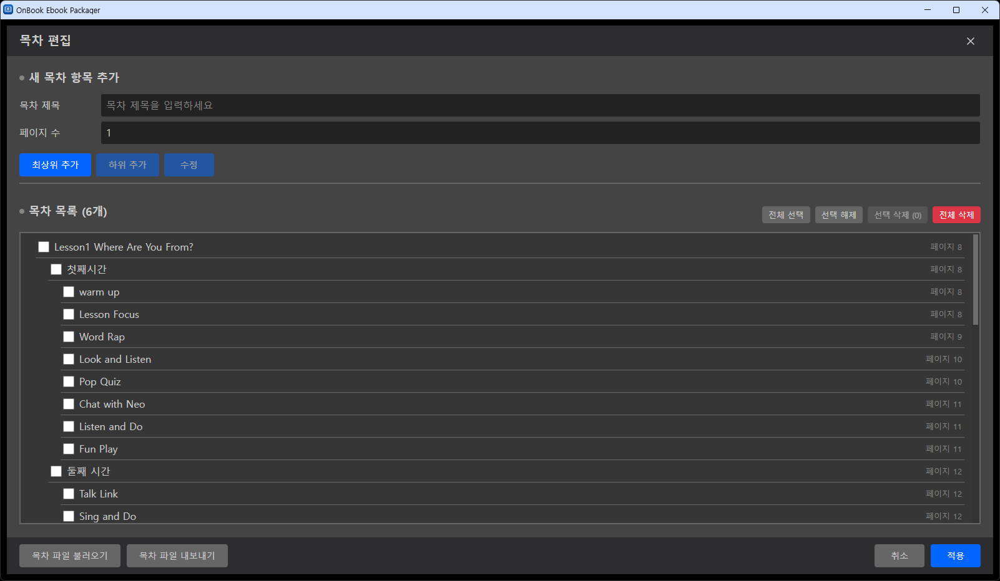
항목을 드래그하면 순서와 계층(들여쓰기)을 함께 조정할 수 있습니다.
XML 편집이 익숙하다면, 단원 하나 분량만 화면에서 만들어
목차 파일 내보내기로 저장한 뒤
그 파일을 직접 편집해 나머지를 채우고 목차 파일 불러오기로 되돌리는 편이 빠릅니다.
- 내보낸 파일 이름은
cdbook-toc.xml입니다 (ZIP에 담길 때toc.xml이 됩니다). - 항목 하나는
<item>안의<label>(제목)과<content pageNumber="12"/>(페이지)로 이뤄지고, 하위 항목은<item>을 중첩해 표현합니다. 구조는 아래 ZIP 구조 > toc.xml의 예시와 같습니다. - 불러올 때 읽는 값은
label과pageNumber뿐입니다.section·href는 저장할 때 다시 계산되므로 신경 쓰지 않아도 됩니다. - 불러오면 현재 목차에 추가할지 덮어쓰기할지 묻습니다. 단원별 파일을 차례로 추가하는 방식으로도 쓸 수 있습니다.
- 덮어쓰기를 고르면 편집 중인 목차가 전부 교체되고 되돌릴 수 없습니다. 필요한 목차는 먼저 내보내 두십시오.
pageNumber를 빠뜨리면 오류 없이 1페이지로 들어가고, 숫자가 아닌 값이면 페이지 번호가 깨집니다. 불러온 뒤 페이지 번호를 확인하십시오.- 파일 구문 자체가 잘못된 경우에는 실패 메시지가 뜨고 편집 중인 목차는 그대로 유지됩니다.
기타 설정
| 항목 | 설명 |
|---|---|
| 페이지 구분선 표시 | 편집 영역에서 양면(펼침면) 페이지 사이의 구분선을 표시할지 설정합니다. |
| 드래그로 양쪽 버튼 선택 | 드래그 선택 영역이 펼침면의 양쪽 페이지에 걸칠 때, 양쪽 페이지의 버튼을 함께 선택할지 설정합니다. |
ZIP 저장·불러오기
- 저장 (Ctrl+S) — 저장 위치와 파일명을 지정하면 페이지 이미지·썸네일·HTML·버튼·목차·출판 정보가 모두 포함된 ZIP이 생성됩니다. 기본 파일명은 출판 정보의 제목입니다.
- 불러오기 (Ctrl+E) — 저장했던 ZIP을 열면 페이지·버튼·목차·출판 정보·시작 페이지 번호가 복원되어 이어서 편집할 수 있습니다.
출력 ZIP 구조
저장된 ZIP 내부는 다음과 같이 구성됩니다. 내용을 직접 수정하지 마세요.
(제목).zip ├─ book.xml ← 출판 정보·페이지 목록(spine)·시작 페이지 번호 ├─ toc.xml ← 목차 (계층 구조) └─ web/ ├─ page-1.html … ← 페이지 HTML ├─ css/common.css ├─ js/page-viewer.js ├─ js/ob/onbook.api.min.js ├─ page_images/page_001.jpg … ← 페이지 원본 이미지 ├─ page_thumbnails/page_001.jpg … ← 페이지 썸네일 ├─ page_data/page-1.js … ← 페이지 데이터(버튼·검색 텍스트) └─ button_images/ … ← 버튼 배경 이미지
book.xml
출판 정보(메타)와 페이지 순서(spine)를 담습니다.
<book xml:lang="ko-KR" version="1.0"> <meta> … id·title·creator·publisher·description … </meta> <manifest><toc href="toc.xml"/></manifest> <spine startPageNumber="1"> <page id="page-1" href="page-1.html" pageNumber="1"/> … </spine> </book>
toc.xml
목차 편집에서 입력한 항목이 계층 그대로 기록됩니다.
<toc version="1.0"> <nav> <item> <label>1단원. …</label> <content section="page-1" pageNumber="1" href="page-1.html"/> <item> … 하위 항목 … </item> </item> </nav> </toc>